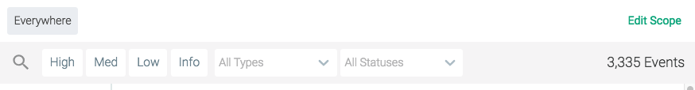
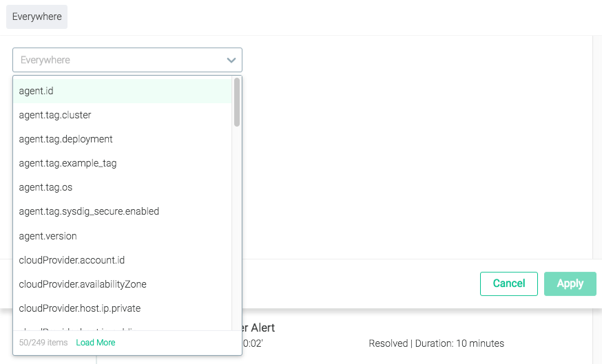
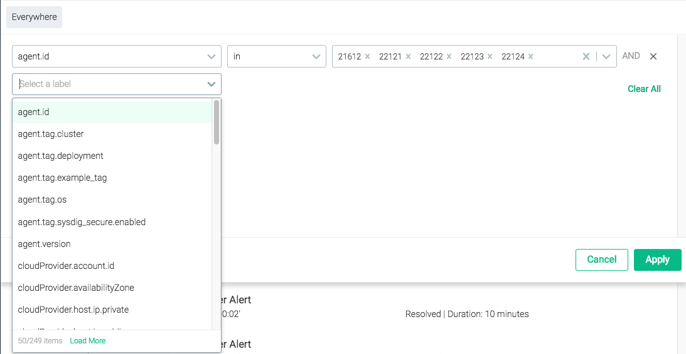
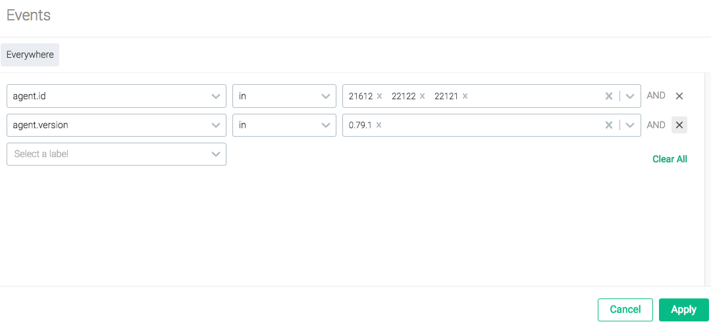
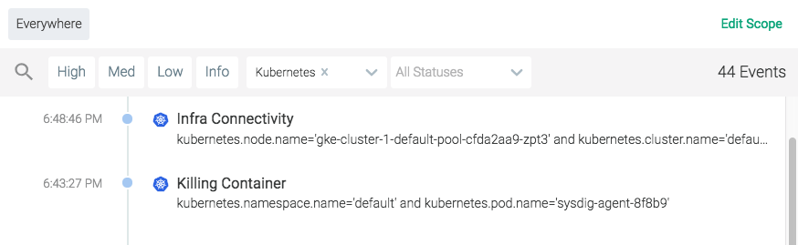

Events
The Sysdig Monitor Events module displays a comprehensive list of all events that have occurred within the environment, as a live events feed. The feed displays events created by triggered alerts, pulled from infrastructure services, or defined by users, and allows users to review, track, and resolve issues.
Contents
Event Types
There are three primary types of events displayed in the events feed: alert events, infrastructure events, and custom events.
Alert Events
Alert events are triggered by user-configured alerts. For more information on configuring alerts, refer to the Sysdig Monitor Alerts documentation.
Infrastructure Events
Events can be collected from supported services within the production environment. The Sysdig agent automatically discovers these services and is configured to collect event data for a select group of events by default. Additional events can be added to the list by configuring the dragent.yaml file.
Sysdig currently supports event monitoring for the following services:
Docker
Kubernetes
Note
For more information on configuring additional infrastructure events, refer to the Enable/Disable Event Data documentation.
Custom Events
Additional events can be collected by the Sysdig agent and displayed in the Events module, but require more comprehensive configuration steps. These custom events can be integrated via:
The Sysdig Monitor Slackbot
Python scripts (either pre-built by Sysdig or user-created)
A CURL request
For brief sample scripts regarding configuring other custom events, refer to the Custom Events documentation. For more information, contact Sysdig Support.
Event Severity
Event severity is broken down into four categories in the Sysdig Monitor UI, to better visualize issue priority, and allow for easier filtering practices.
Note
Scripts that used the former severity values (0-7) will continue to work as expected, as the new categories are simplified groupings of those values.
The image below outlines the severity value breakdown:
 |
Event Status
There are two primary event states: triggered, and resolved. In addition, there are two additional statuses available to improve filtering practices:
Note
For more information on filtering the Events feed, refer to the Filter Events section.
Event Status | Description |
|---|---|
Triggered | The circumstances that triggered the event remain in place (for example, the node remains down). |
Resolved | The circumstances that triggered the event are no longer in place (for example, the metric value has returned to within a normal range). |
Acknowledged | Manual label to assist in further filtering the events feed. NoteThe acknowledged label is a purely visual marker, and does not reflect the current state (triggered/resolved) of the event. Custom events cannot be marked as acknowledged. |
Unacknowledged | Manual label to assist in further filtering the events feed. NoteAll events are marked as unacknowledged by default. |
Event Scope
By default, the Events feed displays events from the entire environment. However, the feed can be configured to only show events from a particular scope within that environment.
Note
For more information on scoping, refer to the Grouping, Scoping, and Segmenting Metrics documentation.
To configure the events feed scope:
From the
Eventsmodule, click theEdit Scopelink. Open the top-level drop-down menu.
Select the desired label, either by scrolling through the list, or by typing the name/partial name into the search bar, and selecting it.
 Open the
Operatordrop-down menu, and select the relevant option.Open the
Valuedrop-down menu, and select the relevant option/s.Optional: Open the next level drop-down menu, and repeat steps 3-5.
 Optional: Repeat step 6 for each additional layer of scope required.
Note
Individual layers of the scope can be removed if necessary, by clicking the
Delete(x) icon beside the relevant layer.Click the
Applybutton to save the new scope.
Reset the Scope
To reset the scope to the entire environment:
From the Events module, click the
Edit Scopelink.Click the
Clear Alllink. Click the
Applybutton to save the changes.
Filter Events
The events feed can be filtered in multiple ways, to drill-down into the environment's history and refine the events displayed. The feed can be filtered by severity, type, and/or status. Examples of each are shown below.
The example below shows only high and medium severity events:
 |
The example below shows only Kubernetes events:
|  |
The example below shows only events that are Unacknowledged:
Note
The Acknowledged label is a purely visual marker, and does not reflect the current state (triggered/resolved) of the event. By default, all events are Unacknowledged.
The example below shows medium severity Alert events that remain Triggered, but have been acknowledged:
Search for an Event
The event feeds can be searched by using the search icon in the top bar:
Review an Event
Events can be reviewed in detail by clicking on the event listing in the feed:
To review the environment at the time of the event in detail, click the Explore button to navigate to the Explore module. The Explore module will automatically drill-down to the impacted environment objects.
The Event Details Panel
The Event Details panel contains detailed information about the event. This information is different, depending on whether the event is an Alert event or a Custom event.
Alert Events
The example below is of an Alert event:
Metadata | Description |
|---|---|
Event ID | The unique ID of the event. |
Severity | The severity of the event (High, Medium, Low, Info). |
State | The current state of the event (Triggered, Resolved) |
Duration | The length of time the event lasted. |
Acknowledged | Whether the event has been acknowledged or not. |
Trigger | The cause of the event (for example, the metric that exceeded the defined range, and the value it reached). |
Entity | The entity on which the event occurred. |
Start Time | The date and time the event started. |
End Time | The date and time the event ended. |
Alert Name | The name of the alert that was triggered. |
Type | The type of alert. |
Metrics | The metric/s that were affected. |
Trigger Condition | The condition that was met to trigger the alert. |
Scope | The scope of the alert. |
Segment | The segmentation applied to the alert. |
Note
To configure the alert that created the event, click the Edit Alert link in the Event Details panel. For more information about alerts, refer to the Alerts documentation.
Infrastructure and Custom Events
Infrastructure and custom events display the same set of information in the Event Details panel. The example below is a Docker event:
Metadata | Description |
|---|---|
Event ID | The unique ID of the event. |
Severity | The severity of the event (High, Medium, Low, Info). |
Date / Time | The date and time the event occurred. |
Source | The source of the event (for example, Docker). |
Scope | The scope of the event. |
Description | A detailed description of what occurred. |
Configure Event Alerts
Event alerts can be created (for custom events) and configured (for alert events, and custom events with a previously created alert) from the Event Details panel:
From the Events module, select the event from the feed to open the
Event Detailspanel.Open the
Configure Alertpanel:For existing alerts, click the
Edit Alertlink.For new alerts, click the
Create Alert from Eventbutton.
Configure the alert as necessary. For more information on configuring alerts, refer to the Alerts documentation.
Note
New alerts will be auto-filled with information from the custom event.
Click the
Create buttonfor new alerts, or theSavebutton for existing alerts.